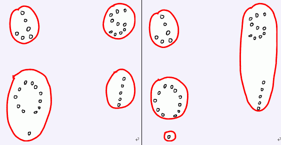

聪聪研究发现，荒岛野人总是过着群居的生活，但是，并不是整个荒岛上的所有野人都属于同一个部落，野人们总是拉帮结派形成属于自己的部落，不同的部落之间则经常发生争斗。只是，这一切都成为谜团了——聪聪根本就不知道部落究竟是如何分布的。 不过好消息是，聪聪得到了一份荒岛的地图。地图上标注了N个野人居住的地点（可以看作是平面上的坐标）。我们知道，同一个部落的野人总是生活在附近。我们把两个部落的距离，定义为部落中距离最近的那两个居住点的距离。聪聪还获得了一个有意义的信息——这些野人总共被分为了K个部落！这真是个好消息。聪聪希望从这些信息里挖掘出所有部落的详细信息。他正在尝试这样一种算法： 对于任意一种部落划分的方法，都能够求出两个部落之间的距离，聪聪希望求出一种部落划分的方法，使靠得最近的两个部落尽可能远离。 例如，下面的左图表示了一个好的划分，而右图则不是。请你编程帮助聪聪解决这个难题。 
| F.A.Qs | Home | Discuss | ProblemSet | Status | Ranklist | Contest | 入门OJ | ModifyUser Xeonacid | Logout | 捐赠本站 |
|---|